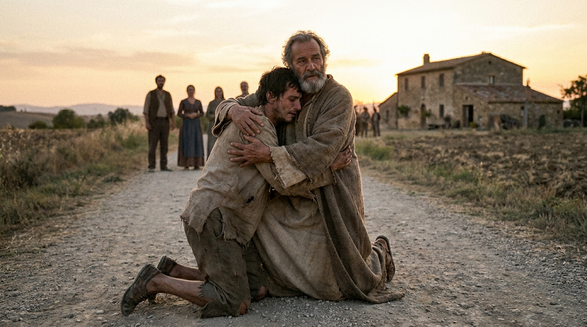

O Médico, a História e o Salvador de Todos
O Evangelho de Lucas é a narrativa mais longa e detalhada da vida de Jesus. Escrito por um médico que investigou cuidadosamente os fatos entrevistando testemunhas oculares, este livro apresenta Jesus como o "Filho do Homem", o Salvador compassivo cuja graça alcança a todos, especialmente aqueles que a sociedade da época marginalizava: os pobres, as mulheres, os doentes e os estrangeiros. É em Lucas que encontramos algumas das histórias e parábolas mais amadas e emocionantes da Bíblia, que só foram registradas aqui, como a do Bom Samaritano e a do Filho Pródigo.
Ficha Técnica
- Autor: Lucas, conhecido como "o médico amado" e companheiro de viagens do apóstolo Paulo.
- Tema Principal: A humanidade e a compaixão de Jesus, e a salvação oferecida a todas as pessoas, independentemente de sua condição social ou nacionalidade.
- Versículo-Chave: "Pois o Filho do homem veio buscar e salvar o que estava perdido." (Lucas 19:10)
Estrutura
- O nascimento e a infância de João Batista e de Jesus (Caps. 1-2)
- O batismo, a tentação e o ministério de Jesus na Galileia (Caps. 3-9:50)
- A longa jornada em direção a Jerusalém, repleta de ensinos e parábolas (Caps. 9:51-19:27)
- Os últimos dias: ministério em Jerusalém, morte e ressurreição (Caps. 19:28-24)